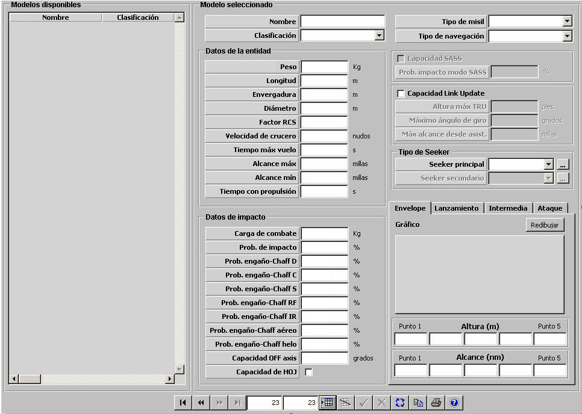
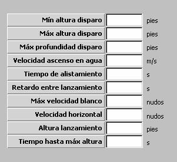
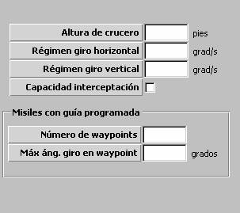
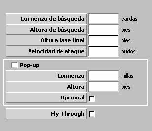
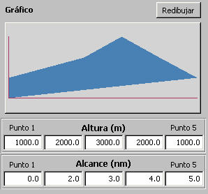

Misil

|  |  |  |
Descripción de los parámetros:
Tipo de Misil: Puede tomar los siguientes valores:
Este parámetro determina el comportamiento del misil en la fase de lanzamiento. Es tenido en cuenta en la comprobación de las condiciones de lanzamiento y también en la comprobación de si el blanco atacado es válido para este misil.
Tipo de Navegación: Puede tomar los siguientes valores:
Este parámetro determina las condiciones de vuelo del misil en la fase de crucero. Es tenido en cuenta por tanto en la actualización de la posición del misil en esta fase, aunque esta fase se ve afectada también por el seeker del misil, por la plataforma lanzadora y por el blanco designado. El tipo de navegación PREPROGRAMADO sólo podrá ser asignado si se ha seleccionado Tipo de Misil SSM, ASM o USM.
Datos de la Entidad:
Peso: Este parámetro es tenido en cuenta para el cálculo del peso transportado por las unidades aéreas que lo instalen. Sólo podrá ser introducido si se ha seleccionado Tipo de Misil AAM o ASM.
Unidades: Kilogramos
Rango: 0 – 9999
Longitud: Este parámetro es tenido en cuenta por los modelos de sensores optrónicos y radar para calcular la distancia a la que el misil es detectado.
Unidades: metros
Rango: 0,1 – 99,9
Envergadura: Este parámetro es tenido en cuenta por los modelos de sensores optrónicos y radar para calcular la distancia a la que el misil es detectado.
Unidades: metros
Rango: 0,1 – 99,9
Diámetro: Este parámetro es tenido en cuenta por los modelos de sensores optrónicos y radar para calcular la distancia a la que el misil es detectado.
Unidades: metros
Rango: 0,1 – 99,9
Factor RCS: Factor que modela la variación de RCS con el "Aspecto" (dado por el ángulo alfa = rumbo del contacto - marcación del contacto) del misil.
Unidades: Tanto por uno
Rango: 0,0 – 1,0
Ejemplo:
Si Factor RCS = 0 ⇒ RCS = RCS · seno (alfa).
Si Factor RCS = 0,25 ⇒ RCS = RCS ( 0,25 + 0,75 · seno (alfa) ).
Si Factor RCS = 1 ⇒ RCS no cambia con Aspecto.
Velocidad de Crucero: Este parámetro determina la velocidad de navegación del misil en la fase de crucero.
Unidades: nudos
Rango: 0 – 9999
Tiempo Máximo de Vuelo: Este parámetro determina el intervalo de tiempo máximo que puede estar volando el misil. Transcurrido este tiempo sin impacto, el misil se destruye.
Unidades: segundos
Rango: 0 – 9999
Alcance Máximo: Este parámetro determina la distancia máxima a la que puede ser lanzado el misil.
Unidades: millas
Rango: 0 – 9999,99
Alcance Mínimo: Este parámetro determina la distancia mínima a la que puede ser lanzado el misil.
Unidades: millas
Rango: 0 – 9999,99
Tiempo con Propulsión: Este parámetro determina el tiempo durante el que el misil es capaz de mantener la velocidad. Transcurrido este tiempo el misil pierde progresivamente velocidad.
Unidades: segundos
Rango: 0.0 – 9999,9
Datos de Impacto: Los siguientes parámetros caracterizan la fase de impacto del misil:
Carga de Combate: Este parámetro determina la carga explosiva del misil. Es tenido en cuenta para la evaluación de los daños producidos por el impacto de este misil en una unidad.
Unidades: Kilogramos
Rango: 0 – 9999
Probabilidad de Impacto: Este parámetro es tenido en cuenta para decidir si una vez que se producen las condiciones de impacto, el misil efectivamente produce impacto o no.
Unidades: %
Rango: 0 – 100
Ejemplo:
Una vez que se producen las condiciones de impacto:
Si Prob. de Impacto = 100 ⇒ Impacta siempre.
Si Prob. de Impacto = 50 ⇒ Impacta aleatoriamente (@50% veces).
Si Prob. de Impacto = 0 ⇒ No impacta nunca.
Capacidad SASS: Este parámetro determina si el misil tipo SAM puede ser empleado para atacar blancos de superficie. Sólo puede ser introducido si se ha seleccionado Tipo de Misil SAM.
Probabilidad de Impacto Modo SASS: Este parámetro determina la probabilidad de impacto del misil tipo SAM cuando es empleado para atacar un blanco de superficie. Sólo podrá ser introducido si se ha seleccionado Capacidad SASS.
Unidades: %
Rango: 0 – 100
Probabilidad de Engaño por Chaff D: Este parámetro determina la probabilidad de que el misil sea engañado por Chaff D. Es tenido en cuenta para decidir si el misil es capaz de discernir entre el blanco correcto y el Chaff D cuando se producen las condiciones de posible engaño.
Unidades: %
Rango: 0 – 100
Ejemplo:
Una vez que se producen las condiciones de posible engaño:
Si Prob. de Engaño = 100 ⇒ Siempre es engañado.
Si Prob. de Engaño = 50 ⇒ Es engañado aleatoriamente (@50% veces).
Si Prob. de Engaño = 0 ⇒ No es engañado nunca.
Probabilidad de Engaño por Chaff C: Este parámetro determina la probabilidad de que el misil sea engañado por Chaff C. Es tenido en cuenta para decidir si el misil es capaz de discernir entre el blanco correcto y el Chaff C cuando se producen las condiciones de posible engaño.
Unidades: %
Rango: 0 – 100
Ejemplo:
Igual que Probabilidad de Engaño por Chaff D.
Probabilidad de Engaño por Chaff S: Este parámetro determina la probabilidad de que el misil sea engañado por Chaff S. Es tenido en cuenta para decidir si el misil es capaz de discernir entre el blanco correcto y el Chaff S cuando se producen las condiciones de posible engaño.
Unidades: %
Rango: 0 – 100
Ejemplo:
Igual que Probabilidad de Engaño por Chaff D.
Probabilidad de Engaño por Chaff RF: Este parámetro determina la probabilidad de que el misil sea engañado por Chaff RF. Es tenido en cuenta para decidir si el misil es capaz de discernir entre el blanco correcto y el Chaff RF cuando se producen las condiciones de posible engaño.
Unidades: %
Rango: 0 – 100
Ejemplo: Igual que Probabilidad de Engaño por Chaff D.
Probabilidad de Engaño por Chaff IR: Este parámetro determina la probabilidad de que el misil sea engañado por Chaff IR. Es tenido en cuenta para decidir si el misil es capaz de discernir entre el blanco correcto y el Chaff IR cuando se producen las condiciones de posible engaño.
Unidades: %
Rango: 0 – 100
Ejemplo:
Igual que Probabilidad de Engaño por Chaff D.
Probabilidad de Engaño por Chaff Aéreo: Este parámetro determina la probabilidad de que el misil sea engañado por Chaff Aéreo. Es tenido en cuenta para decidir si el misil es capaz de discernir entre el blanco correcto y el Chaff Aéreo cuando se producen las condiciones de posible engaño.
Unidades: %
Rango: 0 – 100
Ejemplo:
Igual que Probabilidad de Engaño por Chaff D.
Probabilidad de Engaño por Chaff Helo: Este parámetro determina la probabilidad de que el misil sea engañado por Chaff Helo. Es tenido en cuenta para decidir si el misil es capaz de discernir entre el blanco correcto y el Chaff Helo cuando se producen las condiciones de posible engaño.
Unidades: %
Rango: 0 – 100
Ejemplo:
Igual que Probabilidad de Engaño por Chaff D.
Capacidad OFF AXIS: Este parámetro determina si el misil tiene capacidad OFF AXIS. Es tenido en cuenta en el cálculo del sector de fuego del lanzador de misil correspondiente. Si este ángulo es distinto de cero, se suma al sector de fuego del lanzador cuando éste es tipo FIJO u ORIENTABLE.
Unidades: grados
Rango: 0 – 180
Capacidad HOJ: Este parámetro determina si el misil tiene capacidad HOJ, es decir si puede ser guiado por una perturbación desde un ECM sobre el radar asociado a su seeker tipo Radar.
Capacidad Link Update: Este parámetro determina si el misil tiene capacidad de Link Update.
Altura Máxima TRU: Este parámetro determina la máxima altura de la unidad que actúa asistente para que pueda efectuar guiado de este misil. Sólo podrá ser introducido si se ha seleccionado Capacidad Link Update.
Unidades: pies
Rango: 0 – 99999
Máximo Ángulo de Giro: Este parámetro determina el máximo ángulo de giro del misil mientras no tenga actualización del blanco por el asistente. Sólo podrá ser introducido si se ha seleccionado Capacidad Link Update.
Unidades: grados
Rango: 0 – 135
Máximo Alcance del Asistente: Este parámetro determina la distancia al aiming point a la que el misil inicia transmisión para su actualización. Sólo podrá ser introducido si se ha seleccionado Capacidad Link Update.
Unidades: millas
Rango: 0 – 9999
Seeker: Los siguientes parámetros determinan el seeker principal y el seeker secundario asociados al misil. Son tenidos en cuenta en el modelo de misil en vuelo.
Seeker Principal: Ver apartado Seeker.
Seeker Secundario: Ver apartado Seeker. Este parámetro sólo podrá ser introducido si se ha introducido un Seeker Principal.
Envelope: Para cada misil se puede definir un "envelope" que se usará para obtener el alcance en función de la distancia y la altura del blanco. Este parámetro afecta a la comprobación que se realiza en el momento del lanzamiento, de manera que si el blanco está fuera de este alcance el misil no se lanza.
El envelope se define mediante 5 puntos con una altura y un alcance:
Altura:
Unidades: metros
Rango: -99999,9 – 99999,9
Alcance:
Unidades: Millas
Rango: 0,0 – 99999,9

El gráfico es una ayuda que representa la forma del envelope introducido.
El gráfico se actualiza pulsando el botón Redibujar o el botón Validar de la Barra de Navegación.
Lanzamiento: Los siguientes parámetros caracterizan la fase de lanzamiento del misil:
Unidades: pies
Rango: 0 – 99999
Máxima Altura Disparo: Este parámetro determina la máxima altura de la unidad aérea lanzadora a la que puede llevar a cabo un lanzamiento de este misil. Sólo podrá ser introducido si se ha seleccionado Tipo de Misil AAM o ASM.
Unidades: pies
Rango: 0 – 999999
Máxima Profundidad Disparo: Este parámetro determina la máxima profundidad de la unidad submarina lanzadora a la que puede llevar a cabo un lanzamiento de este misil. Sólo podrá ser introducido si se ha seleccionado Tipo de Misil UAM o USM.
Unidades: pies
Rango: 0 – 9999
Velocidad Ascenso en Agua: Este parámetro determina la velocidad de ascenso en el agua del misil al ser lanzado desde unidad submarina sumergida. Sólo podrá ser introducido si se ha seleccionado Tipo de Misil UAM o USM.
Unidades: metros / segundo
Rango: 0 – 999
Tiempo de Alistamiento: Este parámetro determina el tiempo que transcurre desde que se da la orden de fuego hasta que efectivamente se produce el lanzamiento de este misil. Durante este intervalo de tiempo se podrá cancelar el lanzamiento.
Unidades: segundo
Rango: 0 – 99999
Retardo entre Lanzamientos: Este parámetro determina el tiempo entre cada dos lanzamientos cuando se dispara una salva de este misil.
Unidades: segundo
Rango: 0 – 999
Máxima Velocidad del Blanco: Este parámetro determina la máxima velocidad del blanco aéreo para la que se puede llevar a cabo un lanzamiento de este misil contra el mismo. Sólo podrá ser introducido si se ha seleccionado Tipo de Misil UAM, SAM o AAM.
Unidades: nudos
Rango: 0 – 999
Velocidad Horizontal: Este parámetro determina la velocidad horizontal con la que navega el misil durante la fase de lanzamiento.
Unidades: nudos
Rango: 0 – 9999
Altura de Lanzamiento: Este parámetro determina la altura que alcanza el misil al final de la fase de lanzamiento. Sólo podrá ser introducido si NO se ha seleccionado Tipo de Misil AAM ni ASM.
Unidades: pies
Rango: 0 – 99999
Tiempo hasta Máximo Altura: Este parámetro determina el tiempo que tarda el misil en alcanzar la altura máxima (final de la fase de lanzamiento). Sólo podrá ser introducido si NO se ha seleccionado Tipo de Misil AAM ni ASM.
Unidades: segundos
Rango: 0 – 999
Intermedia: Los siguientes parámetros caracterizan las fases de crucero y búsqueda del misil:
Altura de Crucero: Este parámetro determina la altura a la que navega el misil durante la fase de crucero. Sólo podrá ser introducido si se ha seleccionado Tipo de Misil SSM, ASM o USM y si no tiene Capacidad Interceptación.
Unidades: pies
Rango: 0 – 99999
Régimen Giro Horizontal: Este parámetro determina la velocidad de giro horizontal del misil en vuelo en cualquiera de sus fases de navegación.
Unidades: grados / segundo
Rango: 0 – 99,9
Régimen Giro Vertical: Este parámetro determina la velocidad de giro vertical del misil en vuelo en cualquiera de sus fases de navegación.
Unidades: grados / segundo
Rango: 0 – 99,9
Capacidad Interceptación: Este parámetro determina si el misil tiene capacidad de interceptación en altura de blanco. Si tiene esta capacidad, el misil no realiza cambios de altura por fase sino que se dirige a cota del blanco.
Misiles con Guía Programada: Los siguientes parámetros caracterizan las fases de crucero y búsqueda del misil con tipo de navegación PREPROGRAMADO:
Número de Waypoint: Este parámetro determina el número máximo de waypoints que pueden ser preprogramados para este misil. Sólo podrá ser introducido si se ha seleccionado Tipo de Navegación PREPROGRAMADO.
Unidades: ---
Rango: 0 – 9
Máximo Ángulo Giro en Waypoint: Este parámetro determina el máximo ángulo de giro entre un waypoint y el siguiente con el que pueden ser preprogramados los waypoints para este misil. Sólo podrá ser introducido si se ha seleccionado Tipo de Navegación PREPROGRAMADO.
Unidades: grados
Rango: 0 – 135
Ataque: Los siguientes parámetros caracterizan la fase de seguimiento del misil:
Comienzo de Búsqueda: Este parámetro determina la distancia desde el misil al aiming point a la cual el misil pasa de la fase de crucero a la de búsqueda.
Unidades: yardas
Rango: 0 – 999999
Altura de Búsqueda: Este parámetro determina la altura a la que navega el misil durante la fase de búsqueda. Sólo podrá ser introducido si se ha seleccionado Tipo de Misil SSM, ASM o USM y si no tiene Capacidad Interceptación.
Unidades: pies
Rango: 0 – 99999
Altura Fase Final: Este parámetro determina la altura a la que navega el misil durante la fase de seguimiento. Sólo podrá ser introducido si se ha seleccionado Tipo de Misil SSM, ASM o USM y si no tiene Capacidad Interceptación.
Unidades: pies
Rango: 0 – 9999
Velocidad de Ataque: Este parámetro determina la velocidad a la que navega el misil durante la fase de seguimiento.
Unidades: nudos
Rango: 0 – 9999
Pop-Up: Este parámetro determina si el misil tiene capacidad de POP-UP. Los siguientes parámetros caracterizan la trepada. Sólo podrá ser introducido si se ha seleccionado Tipo de Misil SSM, ASM o USM.
Comienzo: Este parámetro determina la distancia al blanco a la que el misil comienza la trepada. Sólo podrá ser introducido si el misil tiene Capacidad de POP-UP.
Unidades: millas
Rango: 0 – 99,9
Altura: Este parámetro determina la altura que alcanza el misil en la trepada. Esta altura es alcanzada a mitad de camino hasta el blanco desde la distancia de comienzo. A partir de ahí el misil desciende hasta impactar en el blanco. Sólo podrá ser introducido si el misil tiene Capacidad de POP-UP.
Unidades: pies
Rango: 0 – 9999
Opcional: Este parámetro determina si el POP-UP puede ser seleccionado opcionalmente al lanzar el misil. Sólo podrá ser introducido si el misil tiene Capacidad de POP-UP.
Fly-Through: Este parámetro determina si el misil tiene capacidad de seguir activo tras atravesar nube de Chaff.